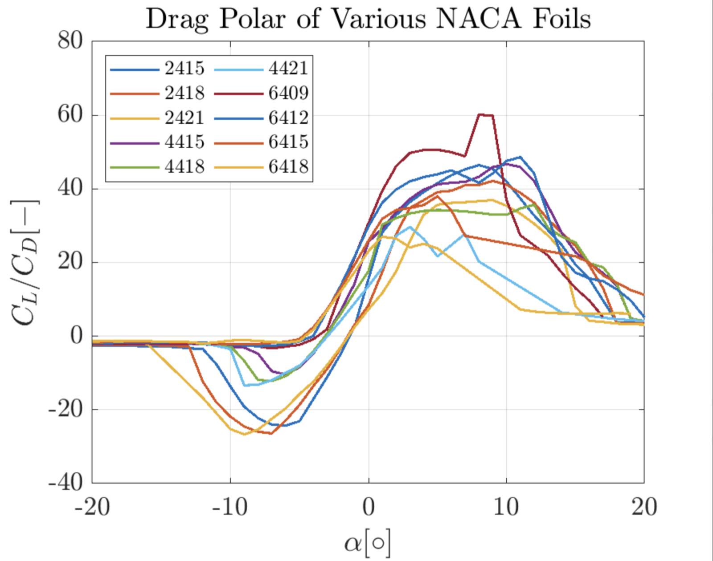
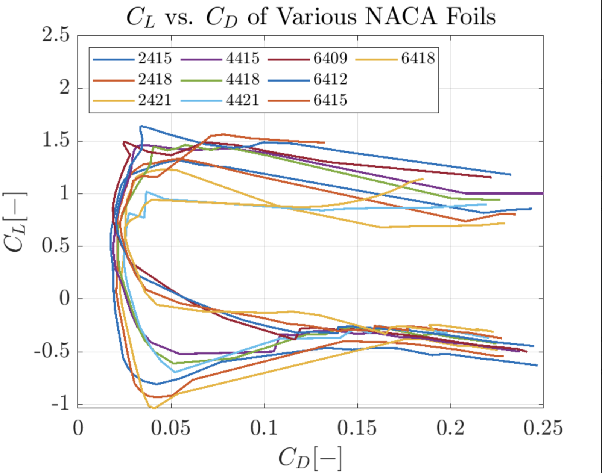
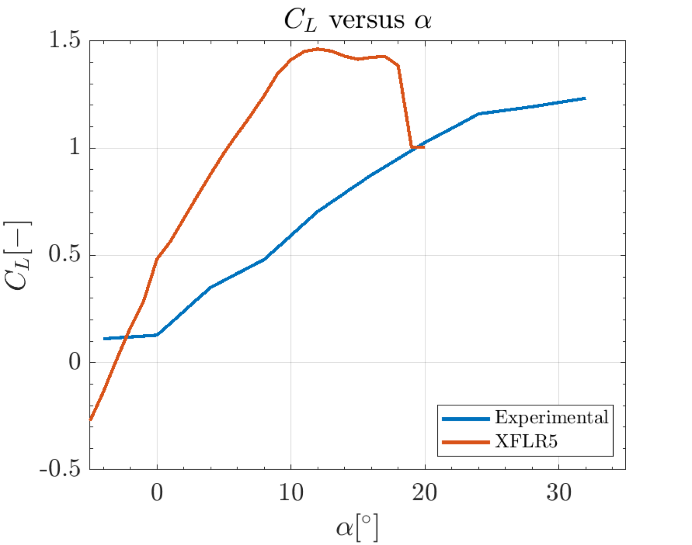

Air Foil Design
Worked in a group of four to design, simulate, 3D print, and wind-tunnel test an airfoil optimized for the highest coefficient of lift at stall.

Objective
The goal of this project was to evaluate how airfoil geometry influences aerodynamic performance and to design an improved airfoil configuration. We compared experimental wind tunnel data with computational simulations to better understand lift generation, drag forces, and stall behavior.
Design Process
Each group member selected candidate airfoil designs, tested them in XFLR5, and compared performance metrics. We looked for the highest peak coefficient of lift, reached as early as possible, with the longest stall plateau — so the stall would actually be visible in our experiment. The final wing design was based on the NACA 4415.




Wind Tunnel Results
XFLR5 predicted stall at a 17° angle of attack. In the wind tunnel, our wing's lift kept climbing: the curve only began to plateau near 32°, with a lift coefficient of 1.23, and never showed a clean stall. The gap comes from finite wing effects — downwash and wingtip vortices reduce the effective angle of attack relative to the 2D simulation — and we also observed that simulation tools tended to overestimate lift and underestimate drag compared to experimental results.


Key Findings
Increasing camber improves lift generation, and a rounded leading edge delays stall by reducing early flow separation. Based on the analysis, the team proposed transitioning from the original airfoil design to a NACA 63A-010 hydrofoil, which reduces thickness and produces a flatter pressure distribution, lowering drag and improving overall efficiency.
Reflection
A different experimental setup would likely have led to a different design choice — we were constrained by the strain gauge thickness. Given another pass, we would put more emphasis on calibration and data collection, and print earlier to iterate more aggressively on the design: tapered wings, surface treatments, dimples, and winglets were all left on the table.